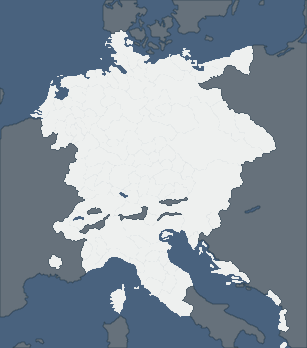

准备探索
神罗小国，你认识多少？
只考浅色区域；深灰色地区不进入题库。
题目— / 10
答对0
正确率—
剩余时间20秒
总耗时0分00秒

100%
滚轮缩放 · 拖动地图 · 点击作答
THE WORLD IN 1444
从一座城，认出一个国家
随机抽取 10 个不同国家，适合短时练习。
CHALLENGE COMPLETE
本轮挑战完成
本局正确率总耗时—
只考浅色区域；深灰色地区不进入题库。

随机抽取 10 个不同国家，适合短时练习。